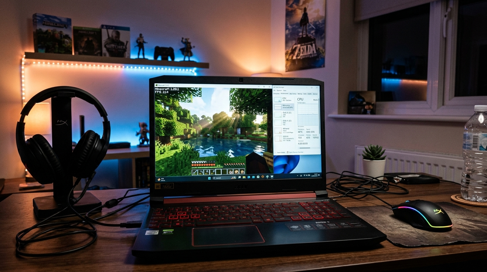
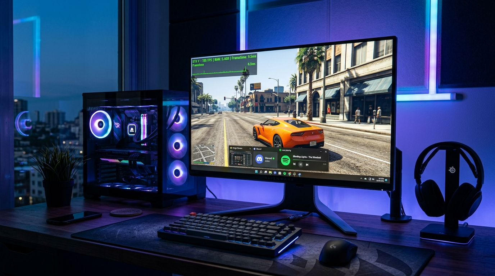
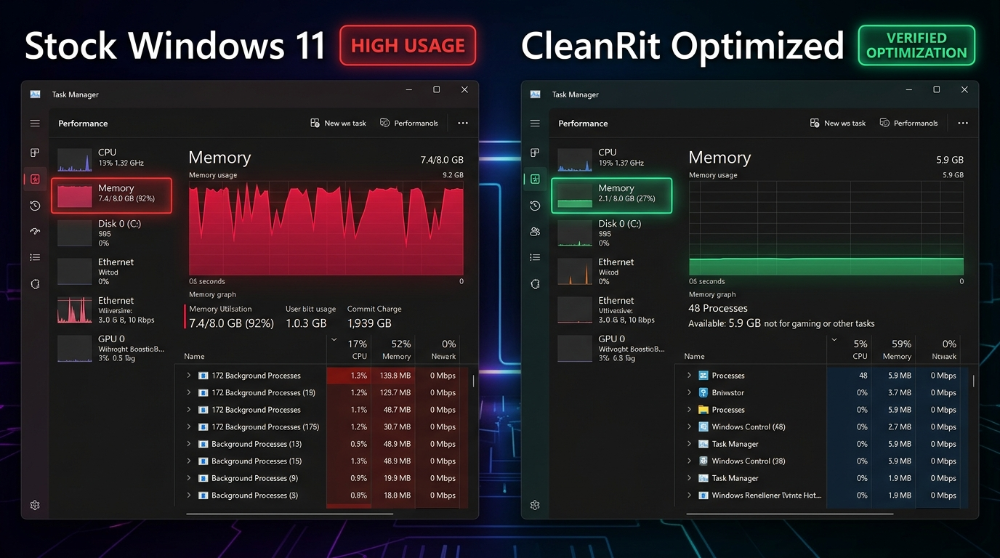

Out-of-the-box Windows 11 steals 6.2 GB of your 8 GB RAM on telemetry, background indexing, and Cortana services before you even open a game. CleanRit is the lightweight, deterministic PC optimizer that frees your RAM, kills micro-stutters, and gives your hardware back to you. 100% Free & Open-Source.
git clone https://github.com/jagrittheking/Cleanrit.git && cd Cleanrit && run_ui.bat

Commercial optimizers tell you to close all your browser tabs. CleanRit fixes Windows memory management so you don't have to sacrifice your workflow to game.

Open your Task Manager right now (Ctrl + Shift + Esc). If you're on 8GB RAM, Windows is likely eating 70% to 90% at pure idle.

Average FPS is good, but 1% lows are what stop you from losing gunfights. Here is the actual before and after on budget hardware.
No snake-oil "registry defragging" that corrupts your OS. Here is the exact technical architecture that frees your hardware.
Windows allocates gigabytes of RAM to a dormant "Standby List" that it refuses to release until your PC is already lagging. CleanRit calls kernel working set management to immediately release dormant pages so games get pure physical RAM.
Modifies process priority classes and CPU affinity in real-time, preventing Windows background indexing, Edge webviews, and search daemons from stealing core CPU cycles during critical game frames.
Scans only strictly approved user temporary folders (`AppData\Local\Temp`). Your personal documents, code repos (`.git`, `node_modules`), game saves, and system files are protected by hardcoded safety layers.
Tiny 128GB or 256GB SSDs suffer severe performance drops when filled past 85%. CleanRit identifies massive game archives on C: and safely moves them to secondary D: or E: drives with SHA-256 verification.
Nothing is ever deleted automatically. Destructive cleanup requires typing DELETE, and file migration requires typing MOVE. Even if the AI provider makes an error, the safety layer enforces confirmation.
Unlike commercial boosters that run on heavy 300MB Electron instances, CleanRit's desktop GUI runs on Microsoft Edge WebView2, using less than 50MB of RAM total.
No catch. CleanRit is an open-source project created specifically for budget gamers and tech enthusiasts tired of commercial boosters charging \$9.99/month for simple Windows scripts. All source code is inspectable on GitHub.
No. CleanRit never touches the Windows Registry or system binaries. It uses strict allowlists for temporary files, verifies SHA-256 checksums before moving large files, and requires explicit user confirmation before touching a single byte.
No! You can run CleanRit, perform your optimizations and RAM cleanup, and close it completely. The optimizations remain active in Windows without wasting any background CPU or RAM.
Yes! All local system monitoring, RAM cleanup, large file finding, drive migration, and Windows tools work 100% offline with zero API keys. The AI chat feature is optional if you want natural-language diagnostic advice.
Download CleanRit for free, run it in 5 seconds, and watch your RAM drop to 25% and your games jump to 100+ FPS.